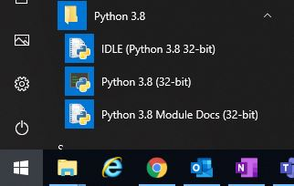
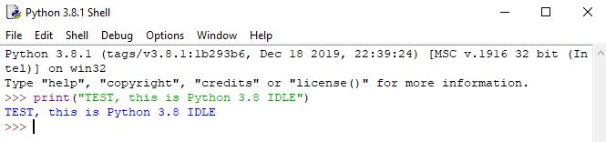
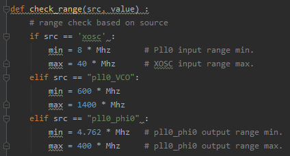
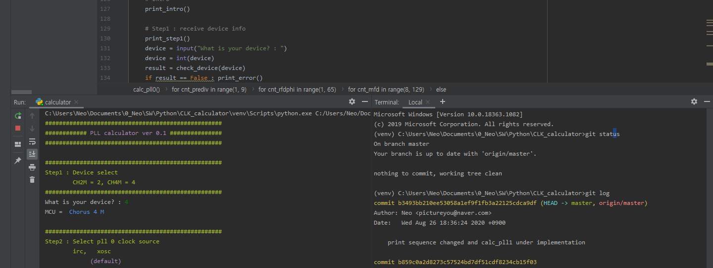
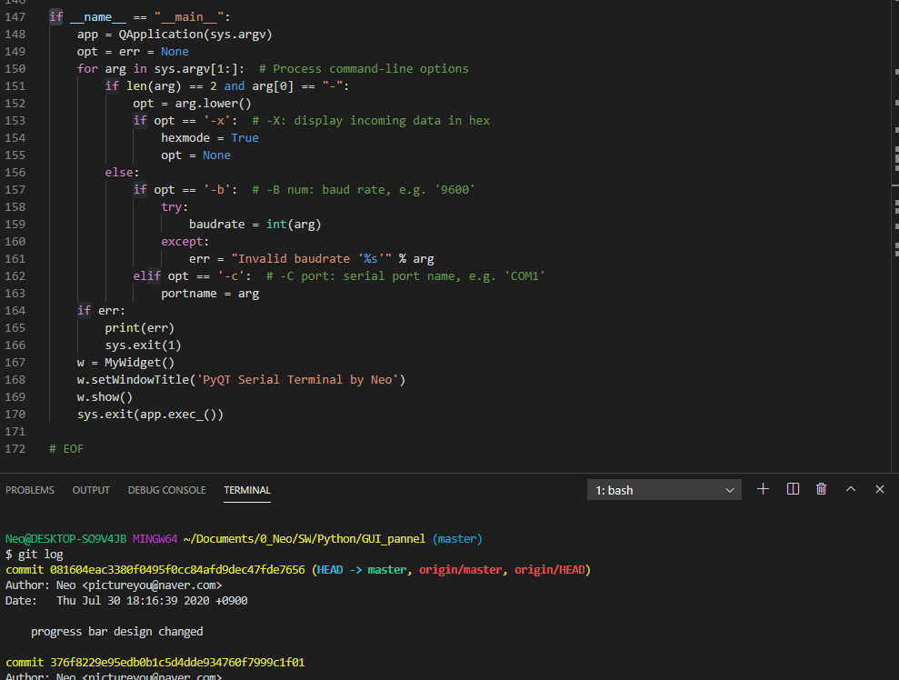
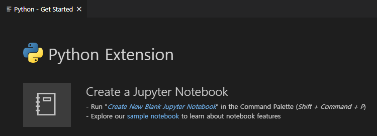
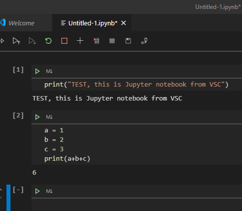
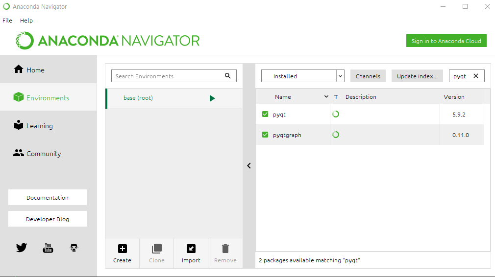

#파이썬, 어떻게 시작하나?
파이썬을 시작하기 위해 검색을 하다보니, 좋은 유튜브 강의들을 발견하게 되었다. 개발환경 역시도 선택지가 많았고 사무실에서 제한된 네트워크 환경에서 개발할 수 있는 환경 구성이 어려웠기 때문에 기록을 남겨본다. 망할 프록시…
#Python 3.8 공식배포 IDLE
가장 먼저 접할 수 있는 환경은 Python 홈페이지에서 최신버전의 Python 을 다운받으면 함께 포함되어 있는 IDLE 이라는 툴 이다.


여기서 다운받을 수 있다.
Python 공식 홈페이지
바로 다운로드
IDLE 을 실행하면 흰 바탕의 커맨드 창이 등장하고, 여기서 바로 파이썬 코드를 작성한 뒤 기능확인도 가능하다. 여러 줄의 코드는 별도 .py 파일을 저장했다가 수행하면 된다.
#Pycharm
아무래도 Python IDLE 은 밋밋하고, 좀더 개발환경 다운 툴을 사용하고 싶어서 찾던 중, Pycharm 이라는 개발환경을 찾게 되었다. 우선 기본 테마가 예쁘고 쓸만하다. 프로젝트 별 venv(virtual environment) 를 설정해 줘야 하는것이 귀찮지만, Anaconda 를 사용하면 쉽게 해결된다.

Pycharm 이 후술하게 될 VSC 에 비해 한가지 좋은점은 콘솔/터미널 창 커스텀이 용이하다는 점이다. 나는 세로 모니터를 하나 쓰고 있는데, 모니터 위쪽에는 코드를, 아래 왼쪽에는 파이썬 콘솔창을, 아래 오른쪽에는 Git bash 를 사용하고 있다.

#VSC, Visual Studio Code
VSC 는 원래 C 코딩용으로 사용했다. Python 사용을 목적으로 VSC 를 사용해 보니, 콘솔창으로 결과를 보면서 공부해야 하는 현재 레벨의 나자신 에게는 Pycharm 이 좀더 편했다. 사유는 앞서 기술한 세로 모니터에서 콘솔창 커스텀 이다.

Python extension 을 설치하면, Jupyter Notebook 도 VSC 환경에서 사용할 수 있다.

#Jupyter notebook
유튜브 강의를 보면서 굉장히 독특한 툴을 사용하는것을 본적이 있다. 나중에 알고보니 주피터 노트북이라는 툴 이었고, 간단한 파이썬 코드 검증 용으로 매우 적합해 보였다. 구글에 찾아보면 사용법 리뷰가 대단히 많다.
pip install 을 통해 주피터 노트북을 설치하면, 웹페이지를 띄워 준다. VSC 에서는 python extension 으로 툴 내부에서 사용할 수 있다.

#Anaconda
Anaconda 는 앞서 설명한 텍스트 에디터 가 포함된 개발환경 과는 거리가 있다. 파이썬으로 코드의 처음부터 끝까지 작성할 수 있겠지만, 실질적으로 매우 힘들고, 파이썬을 이용하는 의미가 없어진다고 생각한다. 따라서 적절한 라이브러리 활용이 필요하고 이를 패키지 라고 한다. C 에서는 include 를 하지만, Python 에서는 import 를 한다. import 를 하려면 pip install 이라는 명령을 통해 해당 패키지를 다운받아야 한다.
그런데, 사내 네트워크에서는 pip install 이 아예 불가능 했다.
이 문제를 해결하기 위해 찾은 것이 Anaconda 였다. Anaconda 는 설치시 Global package 가 함께 설치되어서 일반적으로 많이 사용하는 패키지는 포함되어 설치가 가능하다. 이렇게 Anaconda 를 설치한 뒤에, 개발환경의 Interpreter 로 Anacoda 를 선택해 주면 된다.

#목적에 따라서 이렇게
정리하자면 이렇다.
Python IDLE : 제일 기본, 거의 쓸 일 없다.
Jupyter notebook : 파이썬 문법 공부 목적에 가장 적합함.
Pycharm : 세로 모니터 사용에 적합함.
VSC : 무난함.
#Reference